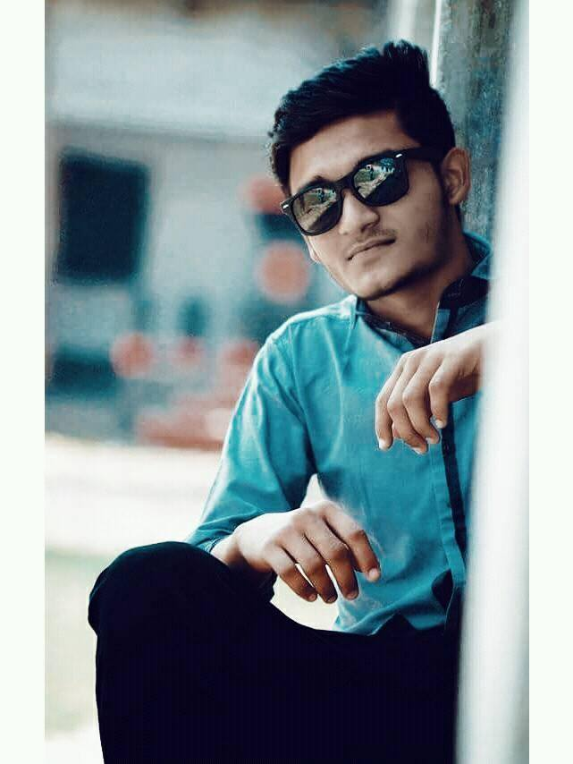
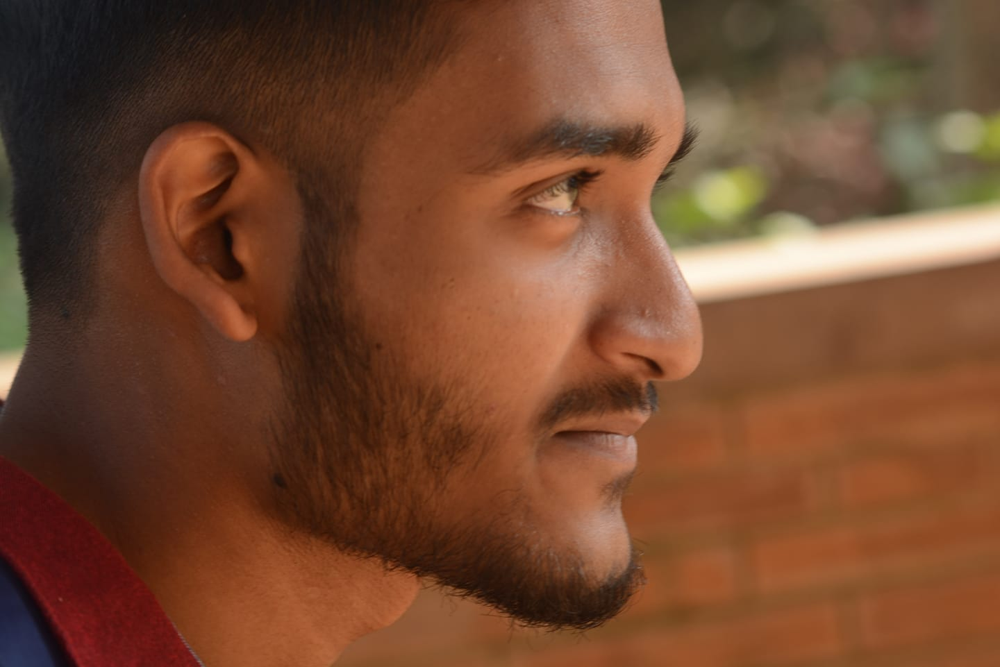

<h2>ajk image dekhamu</h2>
<p>i am super serious</p>
<strong></strong>
void tag: 
self-closing: </img>
image: img 
source: scr 
<h3>image from internet </h3>

<h4>image from local folder</h4>

<h5>more images</h5>
